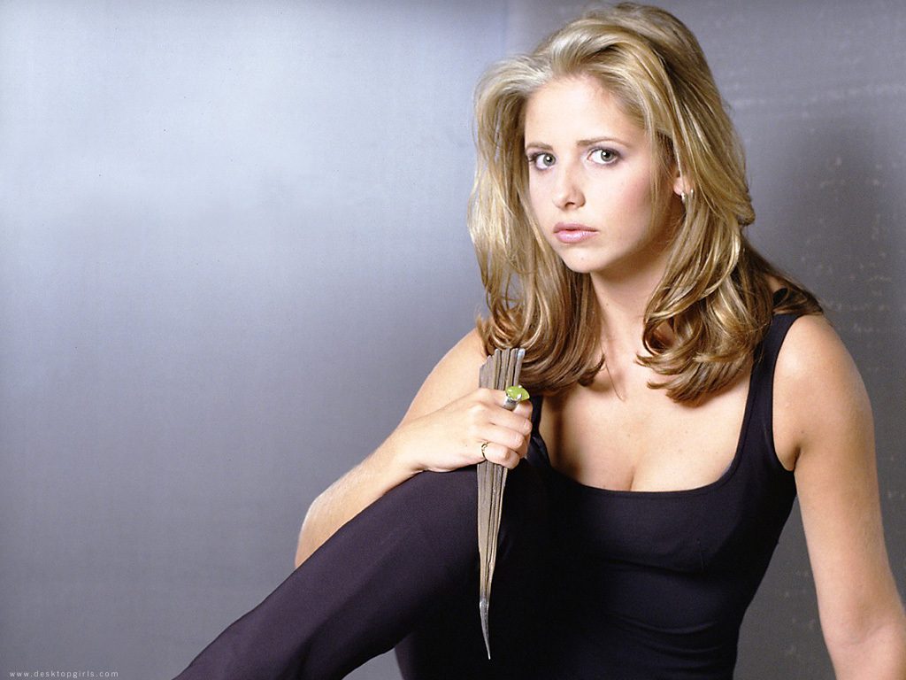

Buffy the vampire slayer

Buffy Summers, the chosen one, holding a stake
- Buffy was born to Hank and Joyce Summers on January 19, 1981, in Los Angeles, California
- She was called to be the Slayer in 1996 at the age of fifteen
- Originally living in Los Angeles, due to an incident involving a gang of vampires at Hemery High School, she moved to Sunnydale
- There, she acted as guardian of the Hellmouth for seven years before the town's destruction in mid-2003
For more info on Buffy, click here!